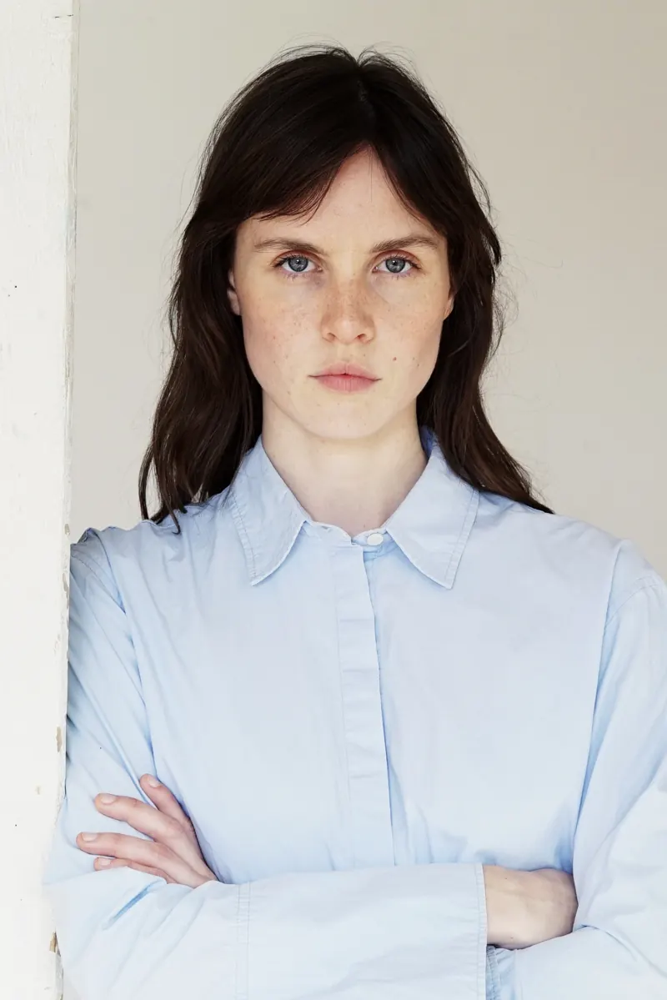
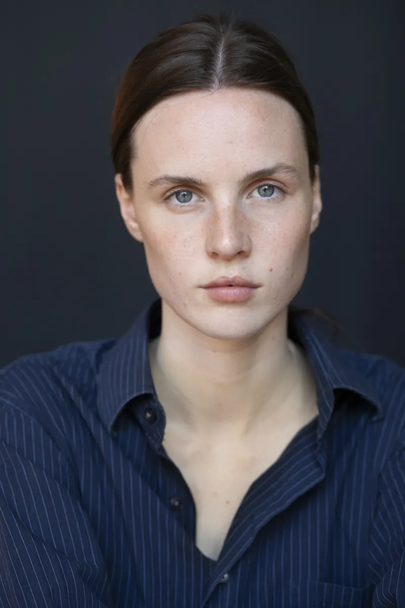
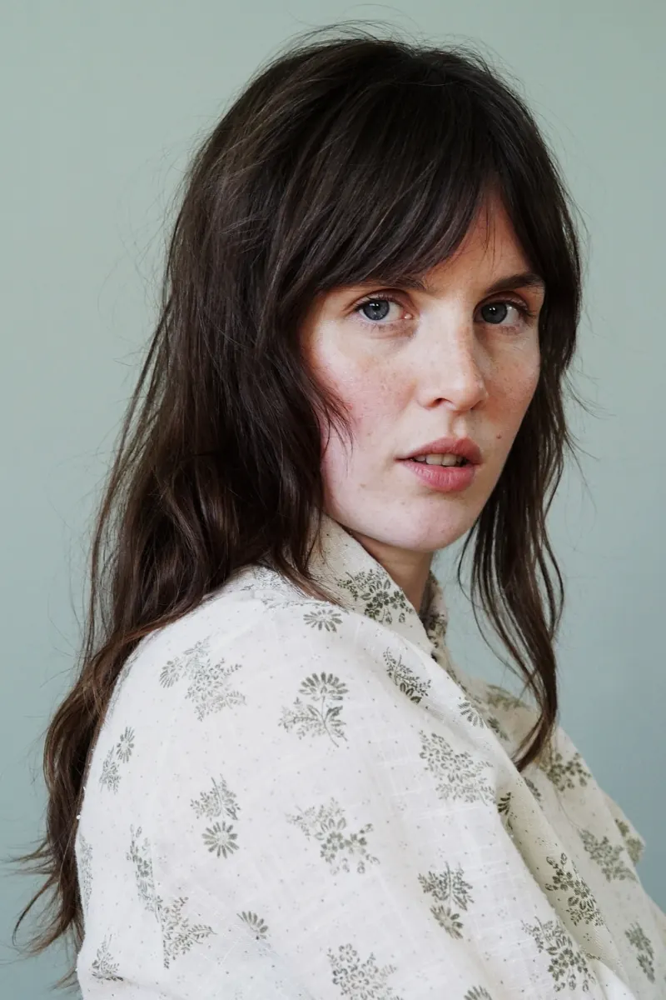
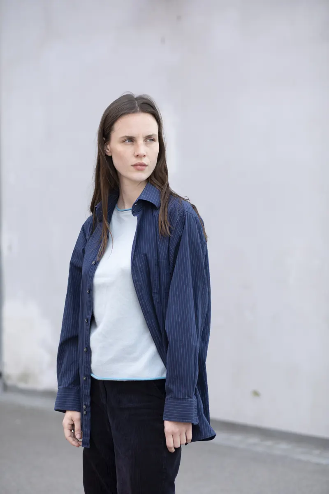

SteckbriefProfile
SteckbriefProfile
- SpielalterPlaying age
- 21–31
- JahrgangBorn
- 1999, Buchholz in der Nordheide
- WohnortBased in
- Berlin
- WohnmöglichkeitenLocal hire
- Hamburg, Stuttgart
- GrößeHeight
- 166 cm
- StaturBuild
- schlank, sportlichslim, athletic
- HaarfarbeHair
- dunkelbraundark brown
- AugenfarbeEyes
- blau-graublue-grey
- StimmlageVoice
- Alt, Mezzosopranalto, mezzo-soprano
- GesangSinging
- Bühnengesang, Chanson, Chorgesang, klassischstage singing, chanson, choir, classical
- TanzDance
- Zeitgenössischer Tanzcontemporary dance
- SprachenLanguages
- Deutsch (Muttersprache), Englisch (B2), Schwedisch (Grundkenntnisse)German (native), English (B2), Swedish (basic)
- DialektDialect
- NorddeutschNorthern German
- SportSports
- Fußball, Laufen, Fitness, Pilates, Yoga, Schwimmen, Aikido, Leichtathletik, Volleyball, Tischtennis, Wandern, Bowlingfootball, running, fitness, Pilates, yoga, swimming, aikido, athletics, volleyball, table tennis, hiking, bowling
- Besondere FähigkeitenSpecial skills
- Biomechanikbiomechanics
- FührerscheinDriving licence
- Klasse Bclass B (car)
- AgenturAgency
- ATR – agentur tanja rohmann
Headshots






Daten von Filmmakers, Stand 14. November 2026.Data from Filmmakers, as of 14 November 2026. Profil auf FilmmakersProfile on Filmmakers · Vita als PDFCV as PDF